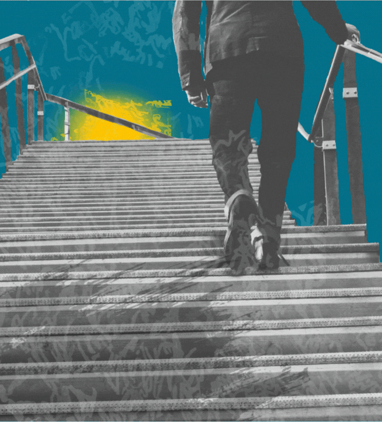

Estudiar sin mudarse
Hace 70 años, la UNNE nació para acercar la universidad a una región que la necesitaba.
Cuando el decreto de 1956 creó la
Universidad Nacional del Nordeste,
no se hablaba de dos ciudades, sino de cuatro provincias:
Chaco, Corrientes, Formosa y Misiones.
Su objetivo era claro: evitar que los jóvenes tuvieran que abandonar su lugar de origen para acceder a estudios universitarios.
Con el tiempo, su núcleo quedó repartido entre Corrientes y Resistencia, con dos campus en cada ciudad capital.
Esa red es la base desde la que la UNNE salió después hacia múltiples ciudades del nordeste argentino
y dio forma a su perfil regional con diversas modalidades.

La UNNE no solo transmite conocimientos, sino que plantea formación personal con ética, pensamiento crítico y compromiso social. Esto se transmite a través de sus pilares institucionales principales.
Porque la educación no es únicamente enseñar. También es transformar realidades.

